Native1x equals4screenpixels at FHD. Runtime not integrated. World relight is reference only for UI: HUD is not relit.
Contract / Checks / Review log
Measured QA differences (accepted by the owner): none
1frames / 1s / static or one-shot
Native1x / FHD4x / night4x / light / dark / checker / grass
Ground line: new sprite / farmer / nearest existing reference
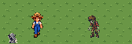
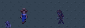
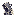
1frames / 0.1s / static or one-shot
Native1x / FHD4x / night4x / light / dark / checker / grass
Ground line: new sprite / farmer / nearest existing reference
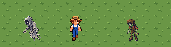
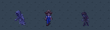
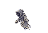
3frames / 0.1s / static or one-shot
Native1x / FHD4x / night4x / light / dark / checker / grass
Ground line: new sprite / farmer / nearest existing reference
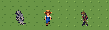
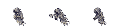
4frames / 0.1s / static or one-shot
Native1x / FHD4x / night4x / light / dark / checker / grass
Ground line: new sprite / farmer / nearest existing reference
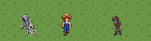
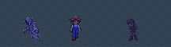
4frames / 0.125s / loop
Native1x / FHD4x / night4x / light / dark / checker / grass
Ground line: new sprite / farmer / nearest existing reference
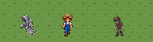
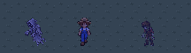
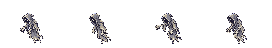
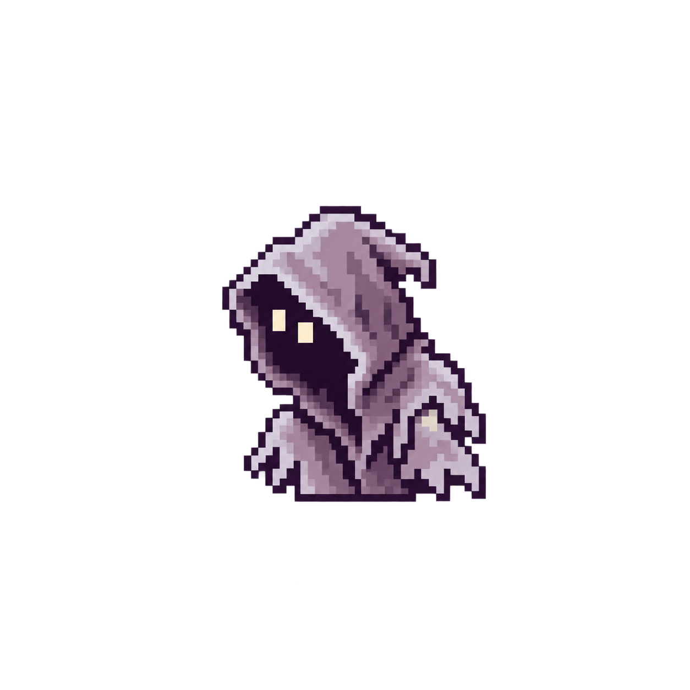
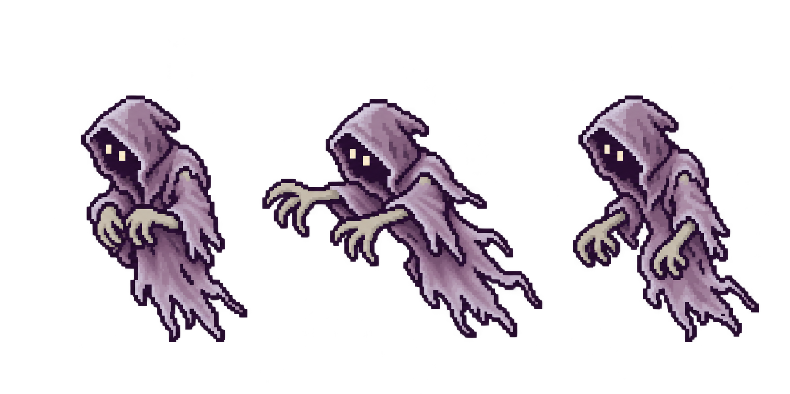
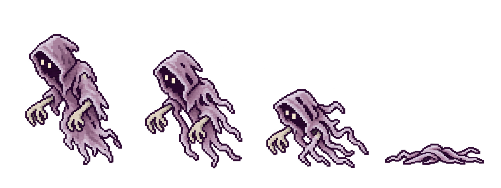
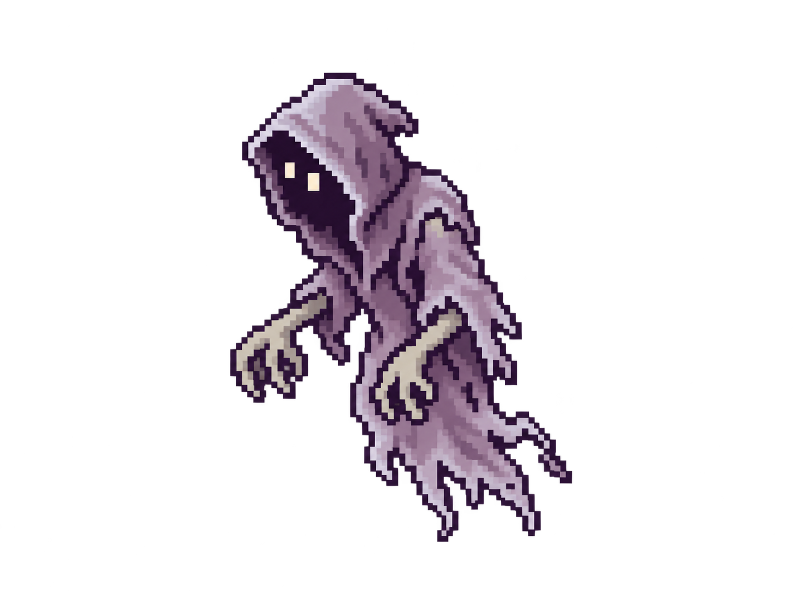
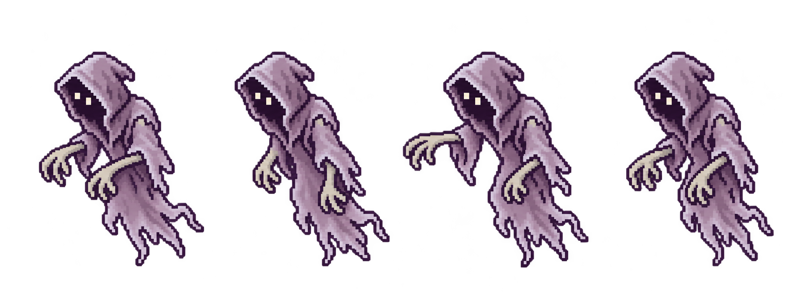
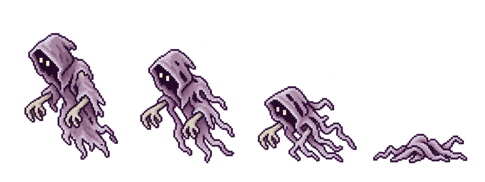
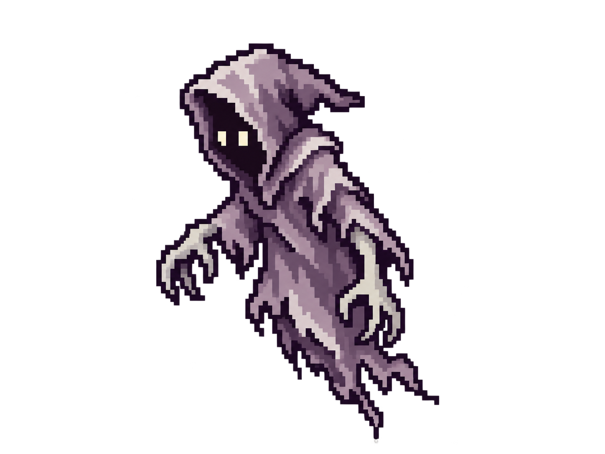
Native1x and FHD4x. Fade is CSS only, original PNGs keep binary alpha. Dark rim remains visible over night grass.
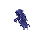
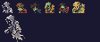